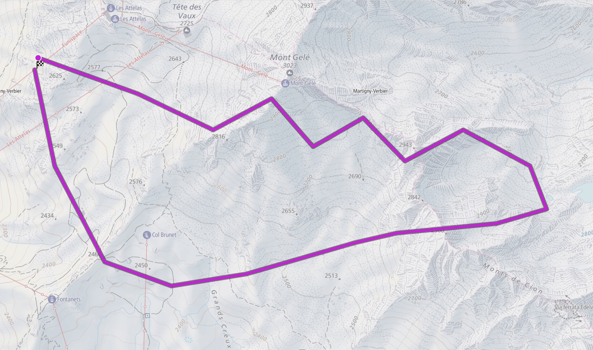
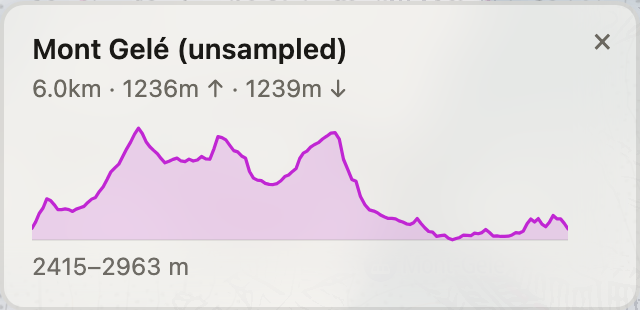

0
The track, as recorded
August 2026Where did I go, how far, and how much up and down?


An uploaded GPX is stored as a list of points — longitude, latitude and height — thinned to at most 2,000 of them. Distance, ascent and descent are measured once, at upload, on the full-resolution track. The map only receives the thinned geometry, so it never recalculates those totals; if it did, the popup would show a second, slightly smaller set of numbers for the same route. How a file becomes that list is a page of its own: From GPX to Line.
The height profile is drawn from the third number of each point the map already holds, so it needs no extra request and works offline.
What to read
- Purple lineA route of yours. A route shared with you but not yet saved is dashed and a different colour.
- Dot / flagStart and finish. They appear from zoom 10.
- Profile gapThe file had no height at that point. The line breaks there instead of being joined across the gap.
- No ascent shownThe file had no heights at all. This is shown as "we don't know", never as 0 m.